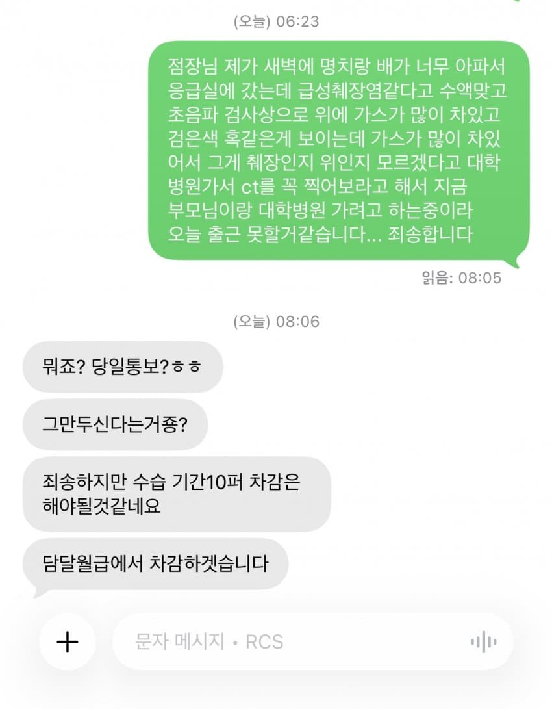

노무사 끼고 노동청 드과자~~

노무사 끼고 노동청 드과자~~
이야... 미친놈인가
무슨 예지능력도 있어야하나 아 제가 일주일뒤에 급성췌장염 걸릴거같아서
이건 또 무슨색 패기야??
로동부가 조스로보이나??
편의점에 병신들이 많은거야 병신새끼들만 편의점을 하는거야
정상인도 많아 그냥 병신들 비율이 높은 겨
저렇게 의심할 거면 사실 확인하게 진단서 개인정보 가려서 사진으로 보내달라고 하면 되는 거 아닌가ㅋㅋ
저런 사람들 지 아플때는 온갖 변명이란 변명은 존나 하더라